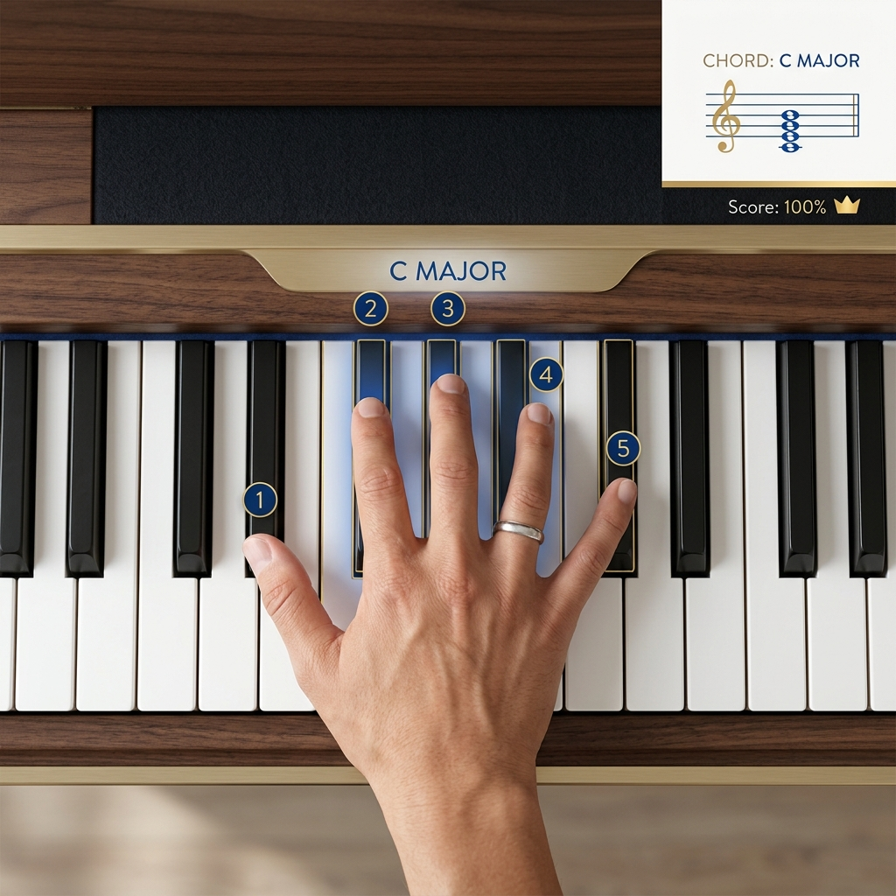

💡 What is a Chord?
At its simplest, a chord is a group of notes played together at the same time. While you can play any combination of notes, the most common chords in pop music are Triads—which consist of three specific notes.
✨ The Magic Formula
Most chords are built by taking a Root note, skipping a note, taking the next, skipping another, and taking the third. This is called playing in thirds!
